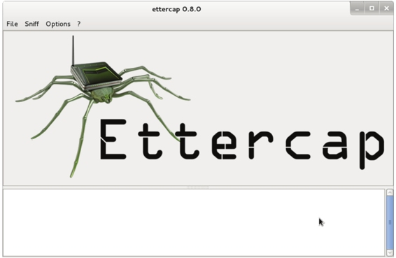
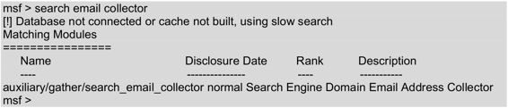
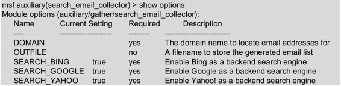
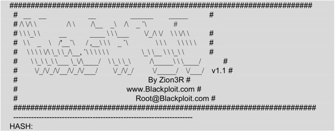

8.2 分析密码
在实现密码破解之前，介绍一下如何分析密码。分析密码的目的是，通过从目标系统、组织中收集信息来获得一个较小的密码字典。本节将介绍使用Ettercap工具或MSFCONSOLE来分析密码。
8.2.1 Ettercap工具
Ettercap是Linux下一个强大的欺骗工具，也适用于Windows。用户能够使用Ettercap工具快速地创建伪造的包，实现从网络适配器到应用软件各种级别的包，绑定监听数据到一个本地端口等。下面将介绍Ettercap工具的使用。
使用Ettercap分析密码的具体操作步骤如下所示。
（1）配置Ettercap的配置文件etter.conf。首先使用locate命令查找到Ettercap配置文件保存的位置。执行命令如下所示：
root@kali:~# locate etter.conf
/etc/ettercap/etter.conf
/usr/share/man/man5/etter.conf.5.gz
从以上输出信息中，可以看到Ettercap配置文件etter.conf保存在/etc/ettercap/中。
（2）使用VIM编辑etter.conf配置文件。将该文件中ec_uid和ec_gid配置项值修改为0，并将Linux部分附近IPTABLES行的注释去掉。修改结果如下所示：
root@kali:~# vi /etc/ettercap/etter.conf
[privs]
ec_uid = 0 # nobody is the default
ec_gid = 0 # nobody is the default
……
#---------------
# Linux
#---------------
# if you use iptables:
redir_command_on = "iptables -t nat -A PREROUTING -i %iface -p tcp --dport %port -j REDIRECT --to-port %rport"
redir_command_off = "iptables -t nat -D PREROUTING -i %iface -p tcp --dport %port -j REDIRECT --to-port %rport"
（3）启动Ettercap。使用Ettercap命令的-G选项，启动图形界面。执行命令如下所示：
root@kali:~# ettercap -G
执行以上命令后，将显示如图8.6所示的界面。

图8.6 Ettercap初始界面
（4）通过使用中间人攻击的方式，收集目标系统上的各种重要信息。通过这些信息来构建可能的密码字典。关于使用Ettercap实现中间人攻击，在第7章已详细介绍，这里不再赘述。
8.2.2 使用MSFCONSOLE分析密码
使用Metasploit MSFCONSOLE的search_email_collector模块分析密码。通过该模块可以搜集一个组织相关的各种邮件信息。这些邮件信息有助于构建用户字典。具体操作步骤如下所示。
（1）使用MSFCONSOLE。执行命令如下所示：
root@kali:~# msfconsole
msf >
（2）查询search_email_collector模块。执行命令如下所示：

执行以上命令后，在输出结果中看到以上信息，就表示存在search_email_collector 模块。
（3）使用辅助模块search_email_collector。执行命令如下所示：
msf > use auxiliary/gather/search_email_collector
msf auxiliary(search_email_collector) >
输出的信息表示，已切换到search_email_collector模块。
（4）查看search_email_collector模块下有效的选项。执行命令如下所示：

输出的信息显示了search_email_collector模块中有效的配置选项，根据用户自己的情况配置相应的选项。
（5）下面分别配置DOMAIN和OUTFILE选项，如下所示：
msf auxiliary(search_email_collector) > set DOMAIN gmail.com
domain => gmail.com
msf auxiliary(search_email_collector) > set outfile /root/Desktop/fromwillie.txt
outfile => /root/Desktop/fromwillie.txt
（6）启动渗透攻击。执行命令如下所示：
msf auxiliary(search_email_collector) > run
[*] Harvesting emails …..
[*] Searching Google for email addresses from gmail.com
[*] Extracting emails from Google search results…
[*] Searching Bing email addresses from gmail.com
[*] Extracting emails from Bing search results…
[*] Searching Yahoo for email addresses from gmail.com
……
[*] rasvin.247@gmail.com
[*] read.jeff@gmail.com
[*] restore.adore@gmail.com
[*] rhetoricguy@gmail.com
[*] sammy@gmail.com
[*] signaturetitleservices@gmail.com
[*] smplustb@gmail.com
[*] starfyi@gmail.com
[*] taylorhansson@gmail.com
[*] thanhtam.hr@gmail.com
[*] theidleague@gmail.com
[*] tjarkse@gmail.com
[*] toni@gmail.com
[*] user@gmail.com
[*] vintageheadboards@gmail.com
[*] vlyubish270@gmail.com
[*] webuyrarebooks@gmail.com
[*] yavmamemogames@gmail.com
[*] yoyonorfcack@gmail.com
[*] Writing email address list to /root/Desktop/fromwillie.txt…
[*] Auxiliary module execution completed
输出的信息显示了所有gmail.cm的邮箱地址，并且将所有信息保存在fromwillie.txt文件中。此时用户可以根据收集到的邮箱用户信息，猜测它的密码。
8.2.3 哈希值识别工具Hash Identifier
哈希值是使用HASH算法通过逻辑运算得到的数值。不同的内容使用HASH算法运算后，得到的哈希值不同。下面将介绍使用Hash Identifier工具识别哈希值的加密方式。
（1）启动hash-identifier命令。在图形界面依次选择“应用程序”|Kali Linux|“密码攻击”|“离线攻击”|hash-identifier命令，将显示如下所示的信息：

从输出的信息中看到HASH:提示符，就表示成功打开了hash-identifier命令的终端。此时，攻击时就有LM加密的哈希值。
（2）攻击6bcec2ba2597f089189735afeaa300d4哈希值。执行命令如下所示：
HASH: 6bcec2ba2597f089189735afeaa300d4
Possible Hashs:
[+] MD5
[+] Domain Cached Credentials - MD4(MD4(($pass)).(strtolower($username)))
Least Possible Hashs:
[+] RAdmin v2.x
[+] NTLM
[+] MD4
[+] MD2
[+] MD5(HMAC)
[+] MD4(HMAC)
从输出的信息中，可以看到6bcec2ba2597f089189735afeaa300d4哈希值可能是使用MD5加密的。